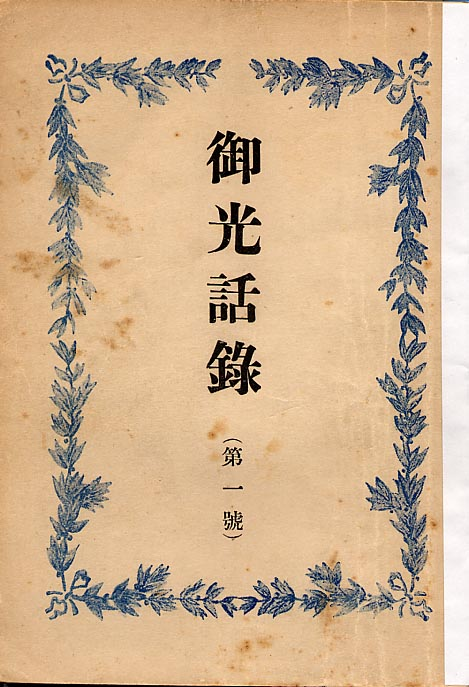
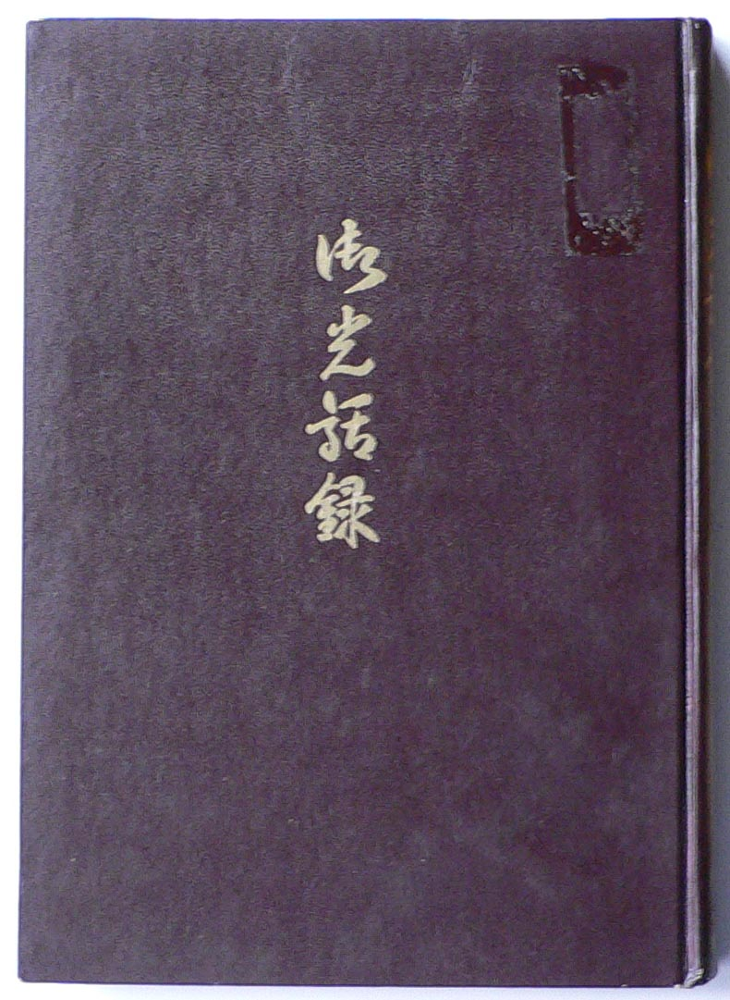

――― 岡
田 自 観 師 の 論 文 集 ――発行誌別
御光話録（１号～１９号）（補）
画像はありません |
御光話録（１号～１９号） 昭和23年12月8日第１号発行 |
| 画像はありません | 御光話録 発行年月日不明、推定昭和26年頃。 和綴じカーボン複写手書き、138Ｐ。 昭和23年1月1日より10月18日までの御面会記録。 作成 日本観音教大成会本部 |
 |
御光話録（再版）第１号 昭和30年 4月30日発行 Ｂ６版 100P 編集人 大沼光彦 |
|
|
 |
御光話録 通称「御光話録補」 昭和30年頃、初版（昭和23年1月1日より10月18日まで）に御光話録１号２号（10月28日から12月28日まで）を加え、昭和23年中の御面会記録としてハードカバーで出版。 |
| ＮＯ． | 発行年月日 |
収 録 内 容 |
岡田茂吉全集 |
| （補） | S26頃不詳 | 明主様との面会記録。Ｓ23年 | 講話篇 1-356 |
| 第１号 | S23.12. 8 | 明主様との面会記録。Ｓ23年11月 | 講話篇 1-295 |
| 第２号 | S24. 1. 8 | 明主様との面会記録。Ｓ23年12月 | 講話篇 1-317 |
| 第３号 | S24. 2. 8 | 明主様との面会記録。Ｓ24年1月 | 講話篇 2- 7 |
| 第４号 | S24.**.** | 明主様との面会記録。Ｓ24年2月 | 講話篇 2- 40 |
| 第５号 | S24.**.** | 明主様との面会記録。Ｓ24年3月 | 講話篇 2- 74 |
| 第６号 | S24. 4.23 | 明主様との面会記録。特輯号 | 講話篇 2-102 |
| 第７号 | S24. 5.13 | 明主様との面会記録。Ｓ24年4月 | 講話篇 2-123 |
| 第８号 | S24. 5.30 | 明主様との面会記録。特輯号 | 講話篇 2-154 |
| 第９号 | S24. 7.10 | 明主様との面会記録。Ｓ24年5月 | 講話篇 2-219 |
| 第10号 | S24. 7.30 | 明主様との面会記録。特輯号 | 講話篇 2-184 |
| 第11号 | S24. 8.21 | 明主様との面会記録。特輯号 | 講話篇 2-256 |
| 第12号 | S24. 9.21 | 明主様との面会記録。Ｓ24年6月 | 講話篇 2-296 |
| 第13号 | S24.10.21 | 明主様との面会記録。Ｓ24年7月 | 講話篇 2-340 |
| 第14号 | S24.11.20 | 明主様との面会記録。Ｓ24年8月 | 講話篇 2-387 |
| 第15号 | S24.12.10 | 明主様との面会記録。Ｓ24年9.10月 | 講話篇 2-425 |
| 第16号 | S25. 1.20 | 明主様との面会記録。Ｓ24年11.12月 | 講話篇 2-465 |
| 第17号 | S25. 2.28 | 明主様との面会記録。Ｓ24.12・25.1月 | 講話篇 2-505 |
| 第18号 | S25. 4.23 | 明主様との面会記録。Ｓ25年2月 | 講話篇 3-374 |
| 第19号 | S25. 6.13 | 明主様との面会記録。Ｓ25年2.3.4月 | 講話篇 3-412 |